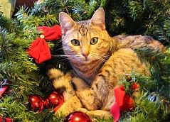

Меня зовут Максим Кормильцев, мне 30 лет. Живу в городе Североморске Мурманской области. Окончил университет в июле 2018 года. Стремлюсь работать в IT-сфере
e-mail:newarty28@gmail.com
Кот по имени Рыжий 
Очень нравится разнообразный спорт: хоккей, футбол, баскетбол. Иногда участвую в соревнованиях по бочче - игре, напоминающей боулинг. Очень интересуют информационные технологии, к примеру, программирование, веб-разработка, компьютерные сети. Иногда читаю стихи.